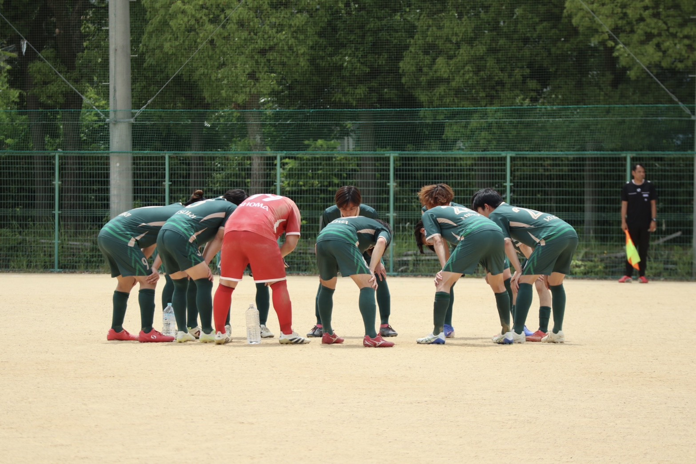
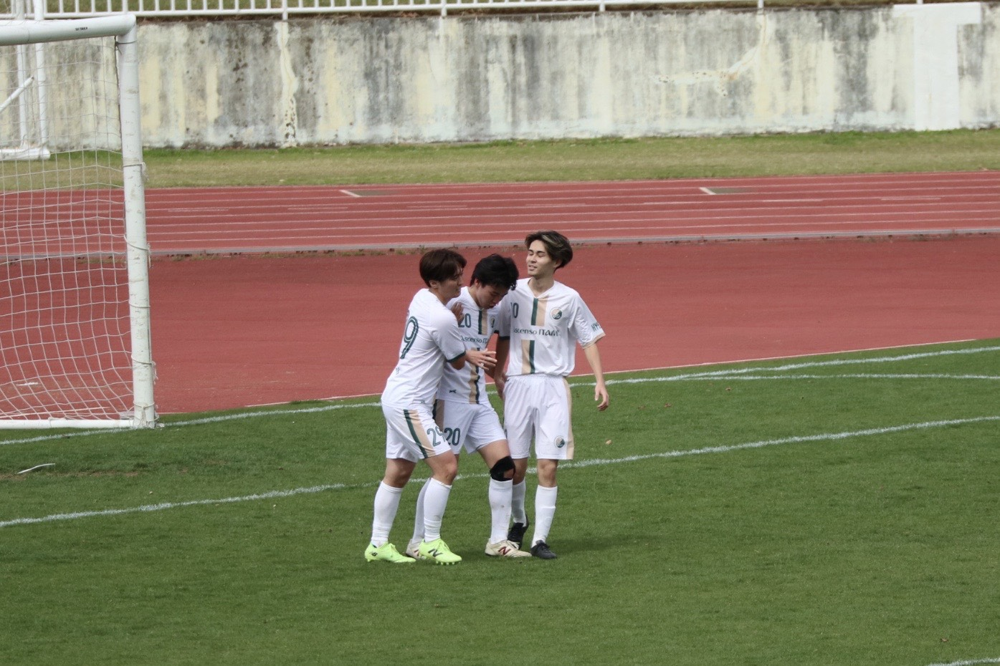

RESPECT 礼儀✦CHALLENGE 挑戦✦CONNECTION 繋がり
01 / WHO WE ARE
挑むことで、
つながっていく。
もう一度、熱いサッカーを。
2025年、伊丹で生まれた社会人サッカーチーム。勝利を本気で追い求めながら、仲間、対戦相手、チームを支えるすべての人への敬意を忘れない。サッカーを通じて、一人ひとりが成長し続けます。
私たちの理念と歩みを見る
02 / MATCH REPORT
戦いの記録.
202609.20北摂C1リーグ 第4節
LATEST MATCHASCENSO ITAMI vs 宝塚FCWIN 7–0＠伊丹スポーツセンター
最新の試合結果やチームの活動を、活動報告ページで更新しています。
03 / CLUB INFO
CLUB INFO.
01所属リーグ兵庫県北摂C1リーグ県4部相当
02活動拠点伊丹市伊丹スポーツセンター他
03活動日時毎週月曜日＋ 月2回程度の試合
※活動日は週によって変動します。最新情報は公式Instagramをご確認ください。
